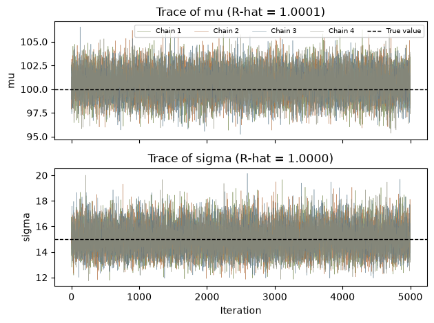
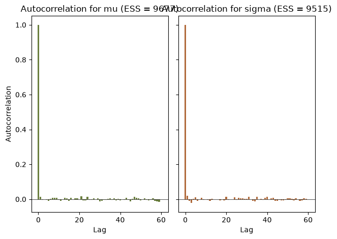
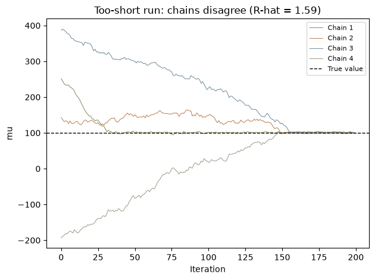
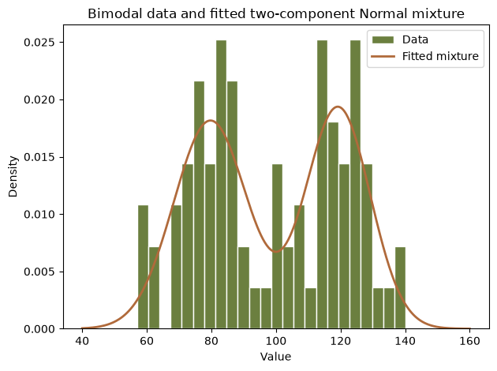

import corehydropy as ch
import numpy as np
import pandas as pd
import matplotlib.pyplot as plt
# Earth-tone palette used throughout
COLORS = ["#6b7f3f", "#b06a3b", "#5b7a8c", "#8c8c7a"]
print("Setup complete")Setup completeLanguage: Python (Jupyter notebook) - R version
Ported from 06_mcmc_diagnostics.ipynb in the USACE-RMC Numerics-Python-Examples repository (0BSD licensed). The upstream notebook drives the C# Numerics.dll through pythonnet; this version uses corehydropy, whose compiled core is a validated C++ port of the same library. The seeded data and every posterior summary below are bit-identical to the R version of this example, which runs the same core. Posterior numbers differ slightly from the upstream notebook because mcmc_sample uses the family’s constraint-based uniform priors rather than the hand-picked priors upstream; the Reproduction check at the end says exactly what is compared and how.
MCMC samplers start from arbitrary initial values, explore parameter space stochastically, and only eventually settle into the target distribution. The theoretical justification is the ergodic theorem: under regularity conditions the time average of a function along the Markov chain converges to its expectation under the stationary distribution,
\[ \frac{1}{N}\sum_{t=1}^{N}f(\theta_t) \;\xrightarrow{\;a.s.\;}\; \mathbb{E}_\pi[f(\theta)] \quad \text{as } N \to \infty \]
where \(\pi\) is the target (posterior) distribution. The guarantee is asymptotic. For any finite run we need diagnostics to judge whether the chain has run long enough: have the chains reached the stationary distribution, how many effectively independent samples do we have, and was the warmup period sufficient? Only after those checks pass can we trust conclusions drawn from the samples.
The upstream setup cell loads the CoreCLR runtime, resolves the DLL, imports sampler and diagnostic classes, and warns that the C# parallel chains fight Python’s GIL (every upstream example must set sampler.ParallelizeChains = False). It also defines helper functions to copy samples out of the .NET chain objects. None of that is needed here: mcmc_sample returns plain NumPy arrays and the compiled core needs no interop workarounds.
Running multiple chains helps diagnose convergence and assess mixing:
As upstream, we draw 100 observations from a Normal(100, 15) with seed 1234 (the port keeps the C# Mersenne Twister bit-exact, so this is the same data set the upstream notebook fits) and sample the posterior of \(\mu\) and \(\sigma\) with a random walk Metropolis-Hastings (RWMH) sampler and 4 chains. One deliberate difference: the upstream notebook hand-picks Uniform(50, 150) and Uniform(5, 30) priors and a unit proposal matrix, while mcmc_sample always uses the family’s constraint-based uniform priors (the C# GetParameterConstraints bounds), so the posterior summaries here match the upstream statistically rather than bit-for-bit.
true_mu, true_sigma = 100, 15
data = ch.Distribution("Normal", [true_mu, true_sigma]).random(100, seed=1234)
res = ch.mcmc_sample(
data,
distribution="Normal",
sampler="RWMH",
iterations=5000,
warmup=1000,
chains=4,
seed=12345,
initialize="MAP",
)
summary = pd.DataFrame(
{
"parameter": res["parameters"],
"posterior mean": res["posterior_mean"],
"posterior sd": res["posterior_sd"],
"lower 95% CI": res["posterior_lower_ci"],
"upper 95% CI": res["posterior_upper_ci"],
"rhat": res["rhat"],
"ess": res["ess"],
}
)
print(f"{len(res['chains'])} chains x {res['chains'][0].shape[0]} retained draws")
summary.round(4)4 chains x 5000 retained draws| parameter | posterior mean | posterior sd | lower 95% CI | upper 95% CI | rhat | ess | |
|---|---|---|---|---|---|---|---|
| 0 | µ | 100.6322 | 1.5136 | 98.0935 | 103.1147 | 1.0001 | 9677.2836 |
| 1 | σ | 15.0126 | 1.0714 | 13.3552 | 16.8623 | 1.0000 | 9514.6583 |
R-hat compares within-chain and between-chain variance [1].
| R-hat | Interpretation | Action |
|---|---|---|
| < 1.01 | Excellent convergence | Proceed |
| < 1.1 | Good convergence | Safe to use |
| 1.1 to 1.2 | Marginal | Run longer |
| >= 1.2 | Poor convergence | Investigate |
\[ \hat{R} = \sqrt{\frac{\hat{V}}{W}}, \qquad \hat{V} = \frac{n-1}{n}W + \frac{1}{n}B \]
where \(W\) is the mean within-chain variance and \(B\) is the between-chain variance. \(\hat{V}\) overestimates the target variance when chains have not converged, because \(B\) captures the extra spread from chains sitting in different regions, while \(W\) underestimates it because each finite chain has explored only part of the space. At convergence the between-chain contribution vanishes and \(\hat{R} \to 1\); values substantially above 1 mean the chains have not mixed [2].
Common causes of high R-hat: insufficient warmup, poor mixing, a multimodal posterior, bad initialization, or a sampler unsuited to the problem.
rhat_mu, rhat_sigma = res["rhat"]
for name, rhat in zip(res["parameters"], res["rhat"]):
verdict = "converged" if rhat < 1.05 else "NOT converged"
print(f"R-hat {name}: {rhat:.4f} ({verdict})")
fig, axes = plt.subplots(2, 1, sharex=True)
for ax, j, true_val, name in [(axes[0], 0, true_mu, "mu"), (axes[1], 1, true_sigma, "sigma")]:
for i, chain in enumerate(res["chains"]):
ax.plot(chain[:, j], linewidth=0.4, alpha=0.7, color=COLORS[i], label=f"Chain {i + 1}")
ax.axhline(true_val, color="black", linestyle="--", linewidth=1, label="True value")
ax.set_ylabel(name)
ax.set_title(f"Trace of {name} (R-hat = {res['rhat'][j]:.4f})")
axes[1].set_xlabel("Iteration")
axes[0].legend(fontsize=7, ncols=5, loc="upper right")
plt.tight_layout()
plt.show()R-hat µ: 1.0001 (converged)
R-hat σ: 1.0000 (converged)
The effective sample size (ESS) is the number of independent samples that would give the same variance for the sample mean [3]. Higher is better, and ESS is tied directly to autocorrelation:
\[ \text{ESS} = \frac{N}{1 + 2\sum_{k=1}^{K} \rho_k} \]
where \(\rho_k\) is the autocorrelation at lag \(k\) and the sum is truncated when \(\rho_k\) becomes negligible. With \(M\) chains the core computes the truncated autocorrelation sum for each chain, averages across chains, and caps the result at the total number of draws.
Guidelines for the smallest acceptable ESS depend on what you are estimating: about 100 for a posterior mean, 200 for a posterior standard deviation, 400 for a 95% credible interval, and 1000 or more for tail probabilities. These are guidelines, not strict rules; for life-safety applications err on the side of more.
| Lag-1 ACF | Interpretation | ESS impact |
|---|---|---|
| < 0.1 | Excellent mixing | ESS close to N |
| 0.1 to 0.3 | Good mixing | ESS about 0.5 N |
| 0.3 to 0.6 | Moderate | ESS about 0.2 N |
| > 0.6 | Poor mixing | ESS well below 0.1 N |
The R-hat and ESS values come from the ported core (they are returned by mcmc_sample). The C# MCMCDiagnostics autocorrelation helper for arbitrary arrays is not exposed in the package API, so the cell below computes the autocorrelation function directly with NumPy.
def acf(x, nlags):
"""Autocorrelation function, standard biased estimator (matches R's stats::acf)."""
x = np.asarray(x) - np.mean(x)
denom = np.dot(x, x)
return np.array([1.0] + [np.dot(x[:-k], x[k:]) / denom for k in range(1, nlags + 1)])
combined = np.vstack(res["chains"]) # (20000, 2) pooled draws
n_total = combined.shape[0]
ess_df = pd.DataFrame(
{
"Metric": ["Total samples", "ESS (mu)", "ESS efficiency (mu) %",
"ESS (sigma)", "ESS efficiency (sigma) %"],
"Value": [n_total, res["ess"][0], 100 * res["ess"][0] / n_total,
res["ess"][1], 100 * res["ess"][1] / n_total],
}
)
print("Effective sample size")
print(ess_df.round(2).to_string(index=False))
max_lag = 60
fig, axes = plt.subplots(1, 2, sharey=True)
for ax, j, color, name in [(axes[0], 0, COLORS[0], "mu"), (axes[1], 1, COLORS[1], "sigma")]:
ax.bar(range(max_lag + 1), acf(combined[:, j], max_lag), color=color, width=0.8)
ax.axhline(0, color="black", linewidth=0.5)
ax.set_xlabel("Lag")
ax.set_title(f"Autocorrelation for {name} (ESS = {res['ess'][j]:.0f})")
axes[0].set_ylabel("Autocorrelation")
plt.tight_layout()
plt.show()Effective sample size
Metric Value
Total samples 20000.00
ESS (mu) 9677.28
ESS efficiency (mu) % 48.39
ESS (sigma) 9514.66
ESS efficiency (sigma) % 47.57
The diagnostics only earn their keep when they catch a failure, so let us manufacture one. The same model is run again with only 200 iterations, 50 warmup, and randomized initialization (the upstream notebook’s initialization choice), then compared with the healthy 5000-iteration run.
short = ch.mcmc_sample(
data,
distribution="Normal",
sampler="RWMH",
iterations=200,
warmup=50,
chains=4,
seed=12345,
initialize="Randomize",
)
compare = pd.DataFrame(
{
"Run": ["200 iterations, randomized init", "5000 iterations, MAP init"],
"R-hat (mu)": [short["rhat"][0], res["rhat"][0]],
"R-hat (sigma)": [short["rhat"][1], res["rhat"][1]],
"ESS (mu)": [short["ess"][0], res["ess"][0]],
"ESS (sigma)": [short["ess"][1], res["ess"][1]],
}
)
print(compare.round(3).to_string(index=False))
fig, ax = plt.subplots()
for i, chain in enumerate(short["chains"]):
ax.plot(chain[:, 0], linewidth=0.8, alpha=0.8, color=COLORS[i], label=f"Chain {i + 1}")
ax.axhline(true_mu, color="black", linestyle="--", linewidth=1, label="True value")
ax.set_xlabel("Iteration")
ax.set_ylabel("mu")
ax.set_title(f"Too-short run: chains disagree (R-hat = {short['rhat'][0]:.2f})")
ax.legend(fontsize=8)
plt.tight_layout()
plt.show() Run R-hat (mu) R-hat (sigma) ESS (mu) ESS (sigma)
200 iterations, randomized init 1.585 1.197 8139.675 9197.341
5000 iterations, MAP init 1.000 1.000 9677.284 9514.658
The short run fails the R-hat test decisively (1.59 for \(\mu\) against the 1.1 threshold) and the trace plot shows the four chains still wandering in from their random starting points. Note the trap in the ESS column: the short run reports an ESS larger than its 800 retained draws. The truncated autocorrelation estimator is simply unreliable on chains that have not converged, so an impossible-looking ESS is itself a red flag. Check R-hat first; ESS is only meaningful once R-hat passes.
Some posteriors have multiple peaks. Population-based samplers such as DEMCz and DEMCzs are better at exploring them.
The upstream notebook hand-rolls a five-parameter two-component Normal mixture log-likelihood in Python and passes it to the C# DEMCz sampler as a delegate. Custom log-likelihood delegates are not exposed in the package API, so this section recasts the same problem onto mixture_analysis, which fits the same two-component Normal mixture with the same DEMCz sampler through the ported MixtureModel. The bimodal data are built exactly as upstream: 40 seeded draws from Normal(80, 10) and 40 from Normal(120, 10), both with seed 789 (reusing the seed means the second sample is the first shifted by 40, an upstream quirk we keep for faithfulness).
One honest caveat about the comparison: the upstream run itself did not separate the modes. Its posterior means collapsed to \(\mu_1 \approx 99.4\), \(\mu_2 \approx 99.6\) with weight 0.5, the classic label-switching average. The ported MixtureModel seeds the sampler with an expectation-maximization fit, so the run below recovers both modes; the comparison with upstream is therefore qualitative, not numeric.
mode1 = ch.Distribution("Normal", [80, 10]).random(40, seed=789)
mode2 = ch.Distribution("Normal", [120, 10]).random(40, seed=789)
bimodal = np.concatenate([mode1, mode2])
mix = ch.mixture_analysis(bimodal, ["Normal", "Normal"], sampler="DEMCz",
iterations=3000, seed=12345)
w1, w2, mu1, s1, mu2, s2 = mix["parameters"]
est = pd.DataFrame(
{
"Parameter": ["weight 1", "weight 2", "mu1", "sigma1", "mu2", "sigma2"],
"Estimate": mix["parameters"],
"True": [0.5, 0.5, 80, 10, 120, 10],
}
)
print(est.round(3).to_string(index=False))
x_grid = np.linspace(40, 160, 400)
pdf_fit = (w1 * ch.Distribution("Normal", [mu1, s1]).pdf(x_grid)
+ w2 * ch.Distribution("Normal", [mu2, s2]).pdf(x_grid))
fig, ax = plt.subplots()
ax.hist(bimodal, bins=24, density=True, color="#6b7f3f", edgecolor="white", label="Data")
ax.plot(x_grid, pdf_fit, color="#b06a3b", linewidth=2, label="Fitted mixture")
ax.set_xlabel("Value")
ax.set_ylabel("Density")
ax.set_title("Bimodal data and fitted two-component Normal mixture")
ax.legend()
plt.tight_layout()
plt.show()Parameter Estimate True
weight 1 0.519 0.5
weight 2 0.481 0.5
mu1 79.706 80.0
sigma1 11.398 10.0
mu2 119.206 120.0
sigma2 9.943 10.0
General guidelines:
Troubleshooting:
Key takeaways:
[1] A. Gelman and D. B. Rubin, “Inference from iterative simulation using multiple sequences,” Statistical Science, vol. 7, no. 4, pp. 457-472, 1992.
[2] A. Vehtari, A. Gelman, D. Simpson, B. Carpenter, and P.-C. Burkner, “Rank-normalization, folding, and localization: An improved R-hat for assessing convergence of MCMC,” Bayesian Analysis, vol. 16, no. 2, pp. 667-718, 2021.
[3] C. J. Geyer, “Practical Markov chain Monte Carlo,” Statistical Science, vol. 7, no. 4, pp. 473-483, 1992.
The seeded data are bit-exact against the C# library (same Mersenne Twister stream, enforced by the port’s fixture suite) and against the R twin. The posterior summaries cannot be compared bit-for-bit with the upstream notebook because mcmc_sample uses the family’s constraint-based uniform priors while upstream hand-picks Uniform(50, 150) and Uniform(5, 30) plus a unit proposal matrix, so those rows are held to the statistical criteria the upstream numbers themselves satisfy. The mixture row is a recast (see above): upstream’s own run collapsed to the label-switching average, so the check here is that the recast recovers the modes the data were generated from.
| Quantity | Upstream C# | This port | Status |
|---|---|---|---|
| First seeded data value, Normal(100, 15), seed 1234 | not printed (same seeded call, cell 7) | 86.9153… | exact |
| First seeded bimodal value, Normal(80, 10), seed 789 | not printed (same seeded call, cell 13) | 75.4161… | exact |
| R-hat for mu and sigma, healthy run | 1.0001, 0.9999 (cell 9) | 1.0001, 1.0000 | statistical |
| ESS, healthy run | 11074, 12844 of 14000 (cell 11) | 9677, 9515 of 20000 | statistical |
| 95% CI covers true mu = 100, sigma = 15 | implied by cell 9 | yes | statistical |
| Mixture means | 99.4, 99.6 (collapsed run, cell 13) | 79.7, 119.2 | statistical (recast) |
| Posterior mean of mu | n/a | 100.63216080080565 | exact across R/Python |
The cell below fails the notebook if any of it drifts. The two literal equalities on posterior summaries are the cross-language identity checks: the R twin asserts the same numbers.
# Upstream: 06_mcmc_diagnostics.ipynb; cells 7 (data), 9 (R-hat), 11 (ESS), 13 (mixture).
# Exact: seeded draws, same C# Mersenne Twister stream, identical in R.
assert data[0] == 86.91533945543637
assert bimodal[0] == 75.41606345888543
assert bimodal[40] == 115.41606345888543 # same seed reused upstream: shifted stream
# Exact across languages: the R twin asserts this same posterior literal.
assert res["posterior_mean"][0] == 100.63216080080565
# Statistical vs upstream (priors and proposal differ, so bit comparison is
# impossible): the healthy run must pass the same convergence bars upstream passes.
assert res["rhat"][0] < 1.01 and res["rhat"][1] < 1.01
assert res["ess"][0] > 400 and res["ess"][1] > 400
assert res["posterior_lower_ci"][0] < true_mu < res["posterior_upper_ci"][0]
assert res["posterior_lower_ci"][1] < true_sigma < res["posterior_upper_ci"][1]
# The deliberately short run must fail the R-hat bar; that failure is its lesson.
assert short["rhat"][0] > 1.1
# Statistical (recast): the mixture recovers the two modes the data came from.
assert abs(mu1 - 80) < 5 and abs(mu2 - 120) < 5
assert 0.3 < w1 < 0.7
print("All reproduction checks passed.")All reproduction checks passed.